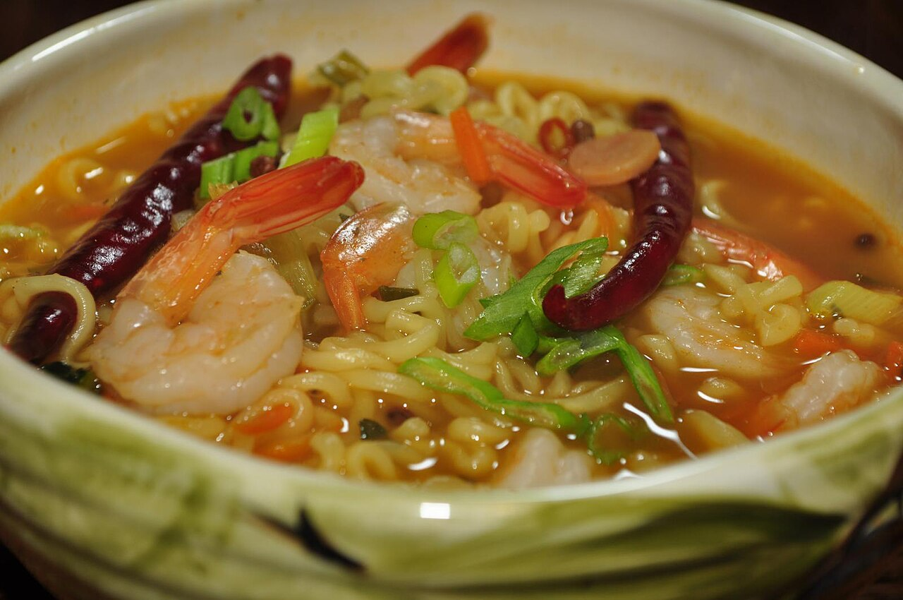

Spicy Shrimp Ramen Noodles

Description
Style up your ramen and create a delicious meal with flavorful broth and appetizing ingredients. You can control the spiciness with the amount of Sriracha.
Ingredients
- 3 1/2 cups low sodium mushroom or vegetables broth
- 2 tablespoons Sriracha
- 1 tablespoon low sodium soy sauce
- 1 teaspoon sesame oil
- 1 teaspoon peeled and minced fresh ginger
- 2 cloves garlic, minced
- 3 heads baby bok choy
- 1 cup sliced shiitake mushrooms
- 1/2 red bell pepper, thinly sliced
- 2 packages ramen noodles
- 8 ounces peeled, deveined large shrimp, thawed if frozen
- 1 tablespoon freshly-squeezed lime juice
- 2 green onions, sliced
Steps
- Gather all ingredients.
- Bring veggie or mushroom broth to a boil in a large saucepan over medium-high heat. Reduce heat to medium-low and stir in chile-garlic sauce, soy sauce, sesame oil, ginger, and garlic. Cover the saucepan and simmer for 5 minutes.
- Slice the fresh bok choy, in half lengthwise, and then cut in half again in the center crosswise.
- Add the bok choy to the broth, cover and cook for 2 minutes. Remove cover, add mushrooms and red bell pepper, and cook for 3 minutes.
- Increase the heat to medium-high and add ramen noodles to broth, discarding seasoning packet. Stir constantly, separating the noodles and cook for 3 to 4 minutes. Taste and adjust seasonings as desired.
- Stir in shrimp and lime juice. Cook until shrimp are curled and opaque, and ramen noodles are tender, 2 to 3 minutes more.
- Ladle into two bowls, and garnish with green onion slices.
- Serve immediately and enjoy!